In the information age, smartphones are essential to our daily lives. With the growth of communication tools like the Internet and rapid advances in digital technology, we can quickly learn about events happening around the world. However, this convenience has its downsides. When we encounter beautiful landscapes while traveling, we often focus on taking photos and videos with our smartphones, eager to share them on social media rather than truly enjoying the moment. As these images accumulate in the cloud, they create a large collection where the importance of each piece of information can fade in the flood of data. These records are experienced as fleeting moments, only to be gradually overshadowed and forgotten.
In an era when photography required film, people likely gave careful thought to what they chose to capture. On the day my grandfather passed away, I discovered the 8mm films he had left behind. He must have filmed my mother with great love. The everyday moments of my grandfather and mother from half a century ago were beautifully recorded, forming cherished memories. However, as technology advances, the demand for old media diminishes, and my grandfather's 8mm films will eventually become unplayable.
To preserve the important memories I never knew, I paint those images on canvas, tracing the paths of memories I cannot recall. The project I named "Footage Paintings" began with the idea of breaking down a source image into individual photographs on a single canvas, which are then painted sequentially; by connecting all the painted frames, a cohesive animation comes to life.
The creation of "Footage Paintings" is inspired by several references from art history. First, I refer to the work of Eadweard Muybridge (1830‒1904), who pioneered the idea of breaking down moving images into a series of sequential photographs that are then painted on canvas in chronological order. Furthermore, I examine Gerhard Richter (1932‒) and his "Photo Paintings" series, where he explores the relationship between photography and painting. The connections between these two forms can also be seen in "Footage Paintings". While photography captures only a fleeting moment, film enables continuous recording of those moments. By referencing Richter and utilizing film, "Footage Paintings" enables viewers to feel the flow of time that has actually passed.
This artwork features paintings and animations inspired by the 8mm films my grandfather
left behind.
In an age where image and video editing technologies have advanced, verifying the
authenticity of information is crucial. Yet, the sight of my mother laughing happily in front
of my grandfather fifty years ago is undeniably real, carrying a tangible quality as
information.
It reveals things I didnʼt know and what I truly wish to leave behind in this world. I traced
their memories and captured them in my artwork.


 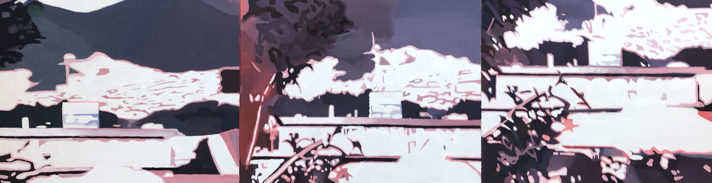
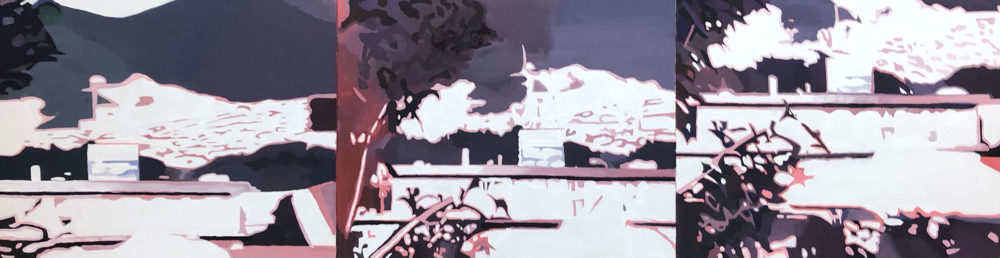
This artwork draws from paintings and animations created from smartphone-captured
videos of waves. Inspired by the theme of "the information society surrounding individuals"
from Footage Paintings , the piece highlights vertical videos found on platforms like TikTok
and YouTube Shorts.
This work serves as an antithesis to the fleeting nature of short videos, which appear like
waves and quickly fade away, resulting in a vertical composition. It contrasts the
overwhelming tide of information that engulfs contemporary life with the tangible waves
found in nature, such as those in oceans and rivers.
I transform the digital waves that remain in the cloud into the real waves found in the sea
and rivers, capturing them using the analog medium of painting.
 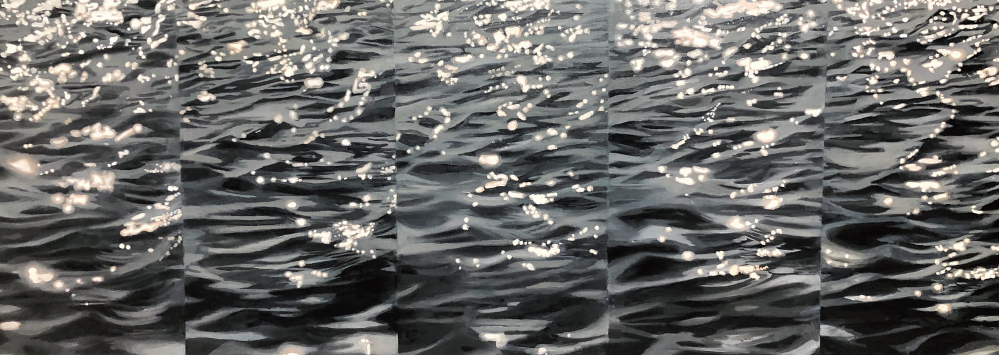
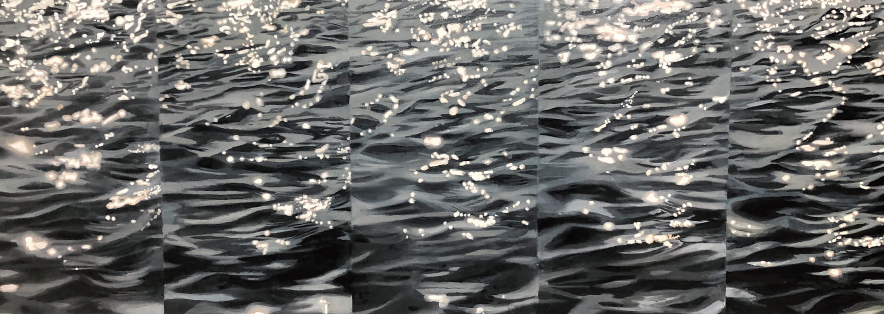 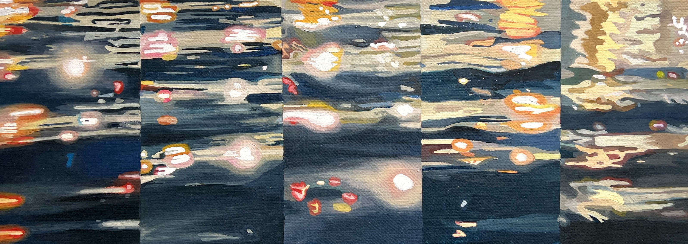
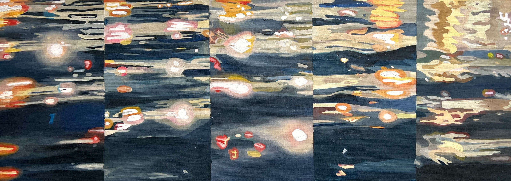


Simultaneous (adj) happening or being done at exactly the same time
This artwork is based on video calls with friends from around the globe. I set aside time
differences and captured the different reflections on the water surfaces of canals in various
cities, accessing them simultaneously with my friends.
I also illustrated scenes from cities around the world at around 12:30 AM Japan time on
January 9, 2024, using images from numerous live cameras set up globally. These are
simultaneous moments from places I am unable to witness̶Nagasaki, New York, Ukraine,
Hawaii, Shibuya, and Gaza.
In todayʼs information-rich society, this work reflects our real daily lives, connected in real
time through technology and united by the shared experience of seeing different landscapes
at once.

 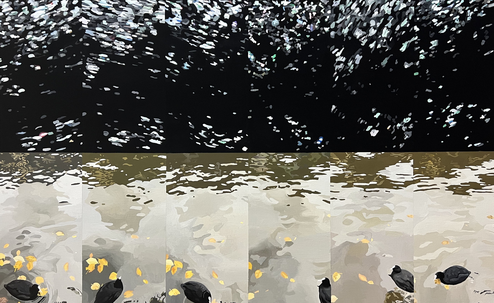
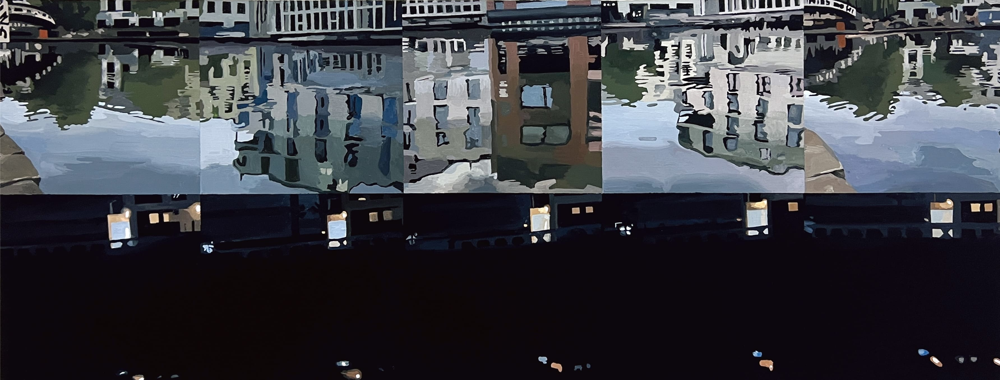
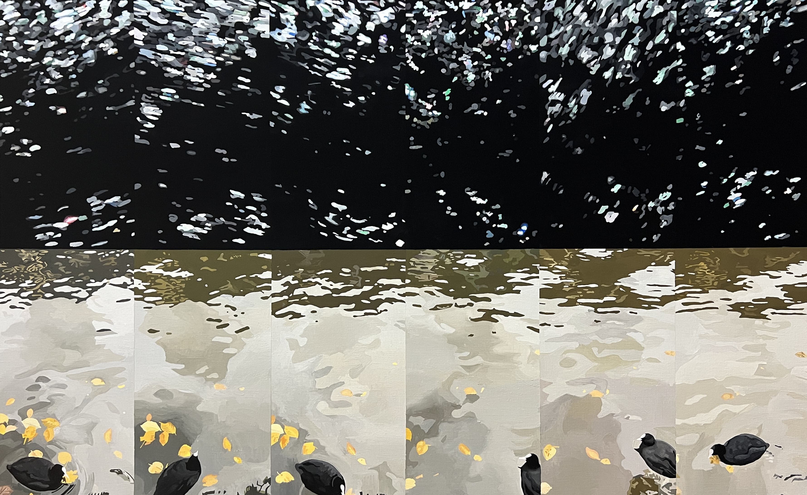
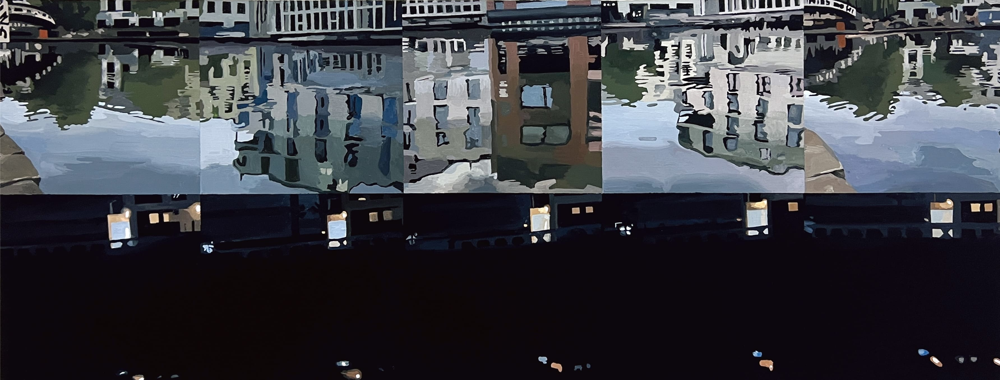 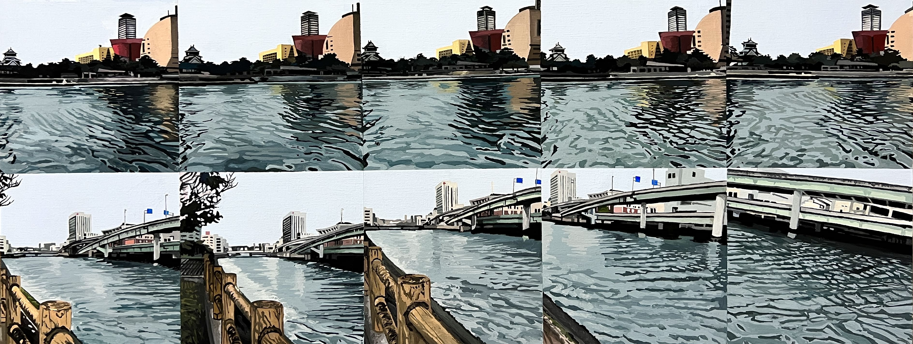
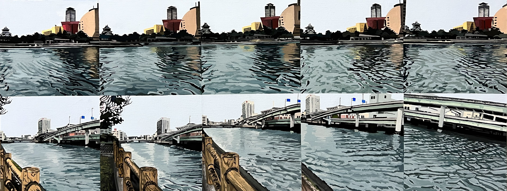
Yurika Matsumura
Born in 1996,based in Nagasaki,Japan
“Footage paintings” is a concept I have created, meaning works that can be seen as a painting
and footage simultaneously.
In order to bring the flow of time onto the surface of a canvas, I split the source film into
several parts and drew them onto the canvas. By putting the individual frames drawn on the
canvas together allows one animation to come into being.
I have drawn the world projected by the film on the canvas. Although paintings and footages
are generally seen as different mediums, I attempt to create works that go beyond the
boundaries of these mediums, which I call “Footage Paintings”.
For inquiries or collaboration opportunities, please contact me at: yurikamatsumura.p@gmail.com